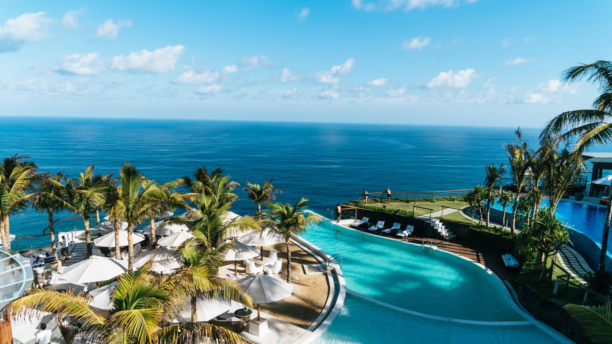
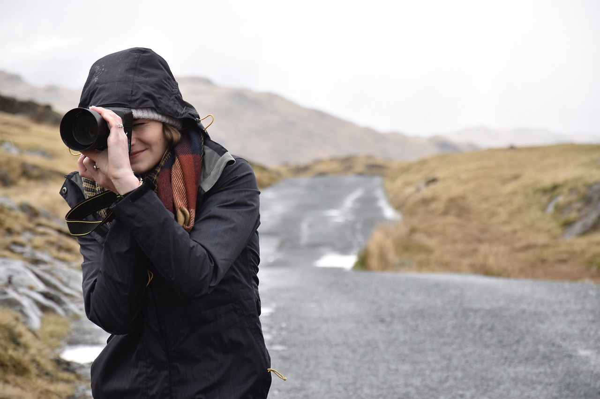
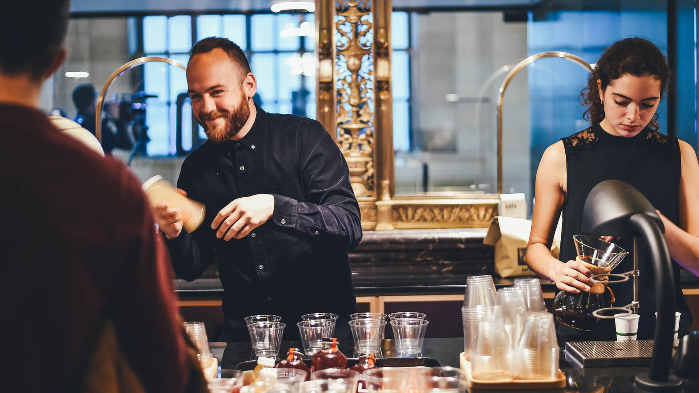
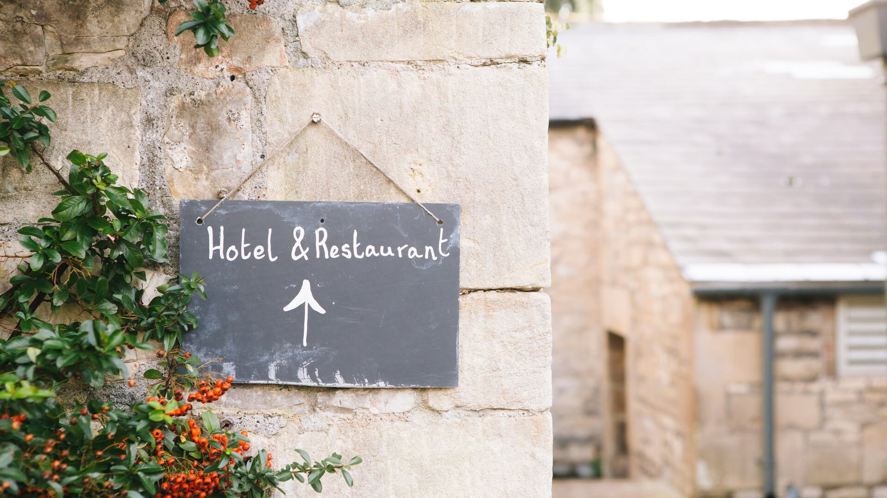
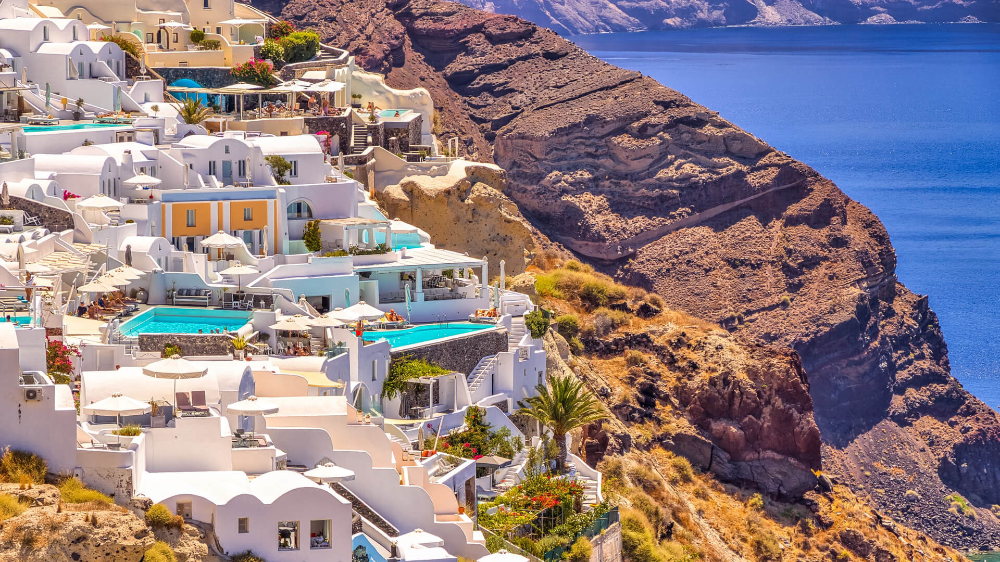

-
カンクンの18歳以上しか泊まれない全室オーシャンビューのラグジュアリーホテル
2020/01/01 カテゴリ１
カンクンの美しい海を一望できる、18歳以上専用のラグジュアリーホテルを紹介します。全室オーシャンビューの贅沢な空間で、特別なひとときを過ごせるこのホテルは、大人の旅行者にぴったり。リラックスしたい方や、ロマンティックなひとときを求める方に最適な滞在先です。
-
台湾で夜景の絶景を見つけた３泊目の夜
2020/01/01 カテゴリ１台湾の魅力的な夜景を楽しむために訪れた3泊目の夜、素晴らしい絶景スポットに出会いました。煌びやかな街の灯りが広がる中、心に残るひとときを過ごし、美しい景色に感動。台湾の夜を彩る特別な場所で、忘れられない思い出をつくりました。この夜の体験をお届けします。
-
ハノイのラグジュアリーホテルステイケーション５日間
2020/01/01 カテゴリ１ハノイでの贅沢なステイケーションを5日間満喫しました。豪華なホテルでの心地よいひととき、美味しい料理やスパ体験を楽しみながら、日常から離れた特別な時間を過ごしました。ハノイの魅力と共に、心身ともにリフレッシュできたこの旅の様子をお伝えします。

原田 ゆう
こんにちは、原田 ゆうです。29歳のカメラマンで、旅を通じて美しい瞬間を切り取ることに情熱を注いでいます。国内外の風景や人々との出会いを写真に収めながら、毎日を冒険しています。旅の中で得た経験やお気に入りのスポットをシェアし、皆さんと一緒に新しい発見を楽しめたら嬉しいです。
Ranking
-

スペインで偶然寄ったバルでのバーテンダーとの出会い
-

イタリアの小さな村で見つけた唯一のホテル＆レストラン
-

最高の天気に恵まれたギリシャの絶景世界遺産